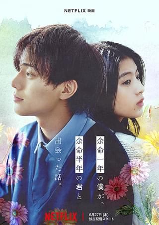

home
food
cinema
sports
music
tension
グランツーリスモ
ドライビングゲーム「グランツーリスモ」の熱中的なプレイヤー、ヤン・マーデンボローに、グランツーリスモのトッププレイヤーたちを本物のプロレーサーに育成するプログラム“GTアカデミー”に参加するチャンスが舞い込む。プログラムに参加したヤンと、世界中から集められたトッププレイヤーたちは、想像を絶するトレーニングやアクシデントを乗り越え、運命のデビュー戦を迎える奇跡と感動の実話。
余命一年の僕が、余命半年の君と出会った話

美術の才能に秀でた早坂秋人は二科展入選を目指して奮闘していたが、心臓に腫瘍がみつかり余命1年を宣告されてしまう。さまざまなことを諦め、感情を押し殺しながら淡々と毎日を過ごしていたある日、病院の屋上で美しい絵を描いていた桜井春奈と出会う。初対面の人間に対して自分があと半年の命だとさらりと言う彼女に、次第に心ひかれていく秋人。春奈には自分の病気を隠し続け、残された時間を彼女のために使うことで、無機質だった秋人の日常に彩りが生まれはじめる。